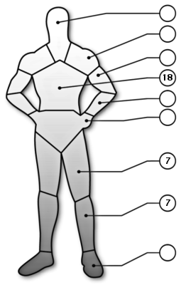

| Name | Yakuza Sweeper | Role | Solo | Armor |
 | Gender | Age |  |
| M/F | 18+ |
| Stats |
| INT | 5 |
| REF | 9 |
| TECH | 4 |
| COOL | 6 |
| ATTR | 4 |
| LUCK | 4 |
| MA | 7 |
| BODY | 8 |
| EMP | 3 |
| Run | 35 m |
| Leap | 1.75 m |
| Lift | 40 kg |
 | NameEnc. |
Heavy Kevlar vest0
Light armor pants0
Total0 |
| |
| Skills[Base / Total] | [Base / Total] |
|
Special abilities
Combat sense[ 7 / ]
Cool/will
Streetwise[ 8 / ]
Interrogation[ 6 / ]
Intimidate[ 7 / ]
Intelligence
Awareness/Notice[ 5 / ]
Shadow/Track[ 6 / ]
Urban survival[ 6 / ]
|
Reflex
Submachine gun[ 5 / ]
Heavy weapons[ 4 / ]
Martial arts (Karate)[ 6 / ]
Rifle[ 5 / ]
Melee[ 6 / ]
Handgun[ 7 / ]
|
| |
| Weapon(s)[#] | Type | WA | Conc. | Ammo | Dam. | #Shots[#] | ROF | Rel. | Range |
| Arasaka P-237[2] | PST | +1 | J | 12 mm | 4D6+1 | 12[3] | 2 | VR | 50 m |
| IMI Galil Patriot[1] | RIF | +1 | N | 7.62C | 6D6+2 | 35[2] | 2/3/25 | VR | 400 m |
| |
| Equipment | Cybernetic |
| Commo Mastoïdien | Optishields (lowlite, infrared, teleoptics)
|
| Money | 5D10+10 eb |
| |
| Background |
| Scouring the city, looking for a man who might know too much. |